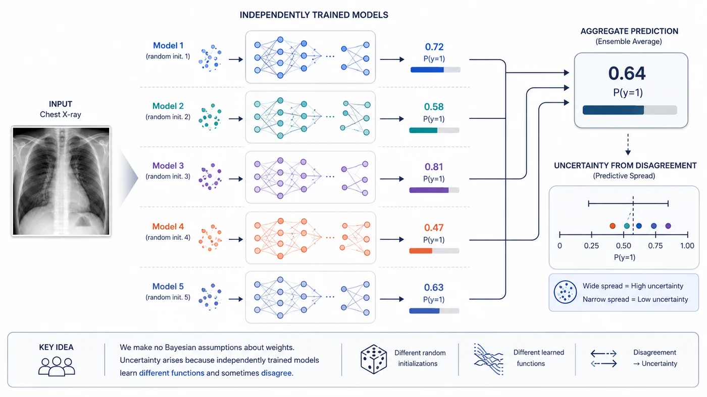
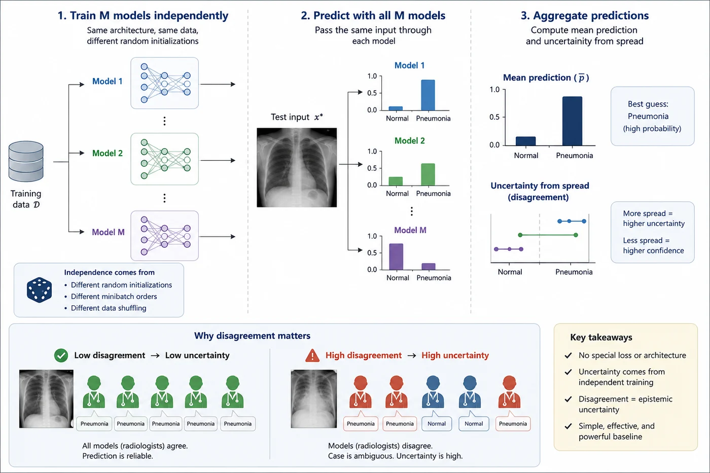

Session 9 — Deep Ensembles¶
Part 2 — Core UQ Algorithms
No Bayesian claims. No special layers. No fancy loss functions. Just multiple models — and somehow, the best uncertainty estimates we've seen so far.

🔗 Bridge from Sessions 5-8¶
In previous sessions we looked at two approximation strategies for Bayesian inference — Variational Inference and Monte Carlo Dropout. Both have clear theoretical motivations. Both connect, at least approximately, to the posterior predictive distribution from Session 4. Both have real limitations.
Deep Ensembles takes a completely different approach. It makes no attempt to approximate a Bayesian posterior. It doesn't place distributions over weights. It doesn't use dropout masks. It simply trains M separate models and asks: when these models disagree, that disagreement is the uncertainty.
The result, empirically, is often better than either of the theoretically motivated approaches. This is one of the most important and honest lessons in applied UQ: elegant theory does not guarantee good empirical performance. Understanding why is as valuable as understanding the methods themselves.
What you'll learn in this session¶
- How training M independent models from different random initializations produces genuine functional diversity
- Why the non-convex loss landscape of neural networks makes ensemble members genuinely different — not just small variations of each other
- How to extract uncertainty from disagreement between ensemble members
- An honest three-way comparison of all the methods in Part 2 so far
🌐 1. The core idea — train M models, measure their disagreement¶
The idea behind Deep Ensembles is almost disarmingly simple. You train M neural networks independently — same architecture, same dataset, different random initializations. At inference time, you pass each test input through all M models, collect their predictions, and compute the mean and spread. The spread is the uncertainty.
That's it. No special loss function. No modified architecture. No inference-time tricks. The uncertainty comes entirely from the fact that M independently trained models will not agree on every input — and the cases where they disagree most are exactly the cases the model is most uncertain about.
💡 Intuition check
Think of an ensemble like a panel of radiologists reviewing the same scan independently. If all five agree on pneumonia, the diagnosis is reliable. If three say pneumonia and two say normal, that disagreement is a real signal — the case is genuinely ambiguous. Deep Ensembles formalizes this intuition mathematically.

Different models can learn different yet equally valid solutions from the same training data. Deep Ensembles transform this diversity from a nuisance into a feature: when independently trained models disagree, the prediction is revealing uncertainty about the underlying decision itself.
🏔️ 2. Why different initializations produce genuinely different models¶
A fair question: if you train M models on the same data, won't they just converge to the same solution? The answer, for neural networks, is no — and understanding why is important.
The loss landscape of a neural network is non-convex. It has many local minima, saddle points, and flat regions. When you start training from a different random initialization, you begin at a different point in this landscape and follow different gradient paths. The local minimum you end up in depends heavily on where you started. Different minima correspond to genuinely different functions — models that agree on most inputs but diverge on ambiguous or unusual ones.
This is what makes ensemble diversity real rather than cosmetic. The M models are not small perturbations of a single solution — they are distinct solutions that happen to all fit the training data well. Their disagreement on test inputs is a genuine signal about which regions of input space are well-constrained by the training data (low disagreement) and which are not (high disagreement).
📐 3. The prediction aggregation formula¶
At inference time, we pass an input $x^*$ through all $M$ models and aggregate their predictions:
$$ p(y^* \mid x^*, \mathcal{D}) \approx \frac{1}{M} \sum_{m=1}^{M} p_{\theta}^{(m)}(y^* \mid x^*) $$
From this ensemble of predictions, we can compute several uncertainty measures:
| Quantity | Formula | Meaning |
|---|---|---|
| Mean prediction | $\bar{p} = \frac{1}{M}\sum_m p_m$ | Best guess — average over all members |
| Predictive entropy | $H(\bar{p})$ | Total uncertainty |
| Mean entropy | $\frac{1}{M}\sum_m H(p_m)$ | Aleatoric uncertainty (data ambiguity) |
| Mutual information | $H(\bar{p})-\frac{1}{M}\sum_m H(p_m)$ | Epistemic uncertainty (ensemble disagreement) |
The epistemic–aleatoric decomposition follows the same principle as in Bayesian neural networks:
$$ \underbrace{H(\bar{p})}_{\text{Total uncertainty}} = \underbrace{ H(\bar{p}) - \frac{1}{M}\sum_{m=1}^{M} H(p_m) }_{\text{Epistemic uncertainty}} + \underbrace{ \frac{1}{M}\sum_{m=1}^{M} H(p_m) }_{\text{Aleatoric uncertainty}} $$
😮 4. The uncomfortable truth — why ensembles win¶
In 2017, Lakshminarayanan, Pritzel, and Blundell published a paper that would have a lasting impact on uncertainty quantification. They compared Deep Ensembles with several existing approaches to predictive uncertainty, including approximate Bayesian neural networks, across standard classification and regression benchmarks. Their results were striking: Deep Ensembles produced uncertainty estimates that were as good as or better than the approximate Bayesian methods, while also performing well under distribution shift.
This was an uncomfortable result for a field that had invested heavily in principled Bayesian approximations. Deep Ensembles did not explicitly learn a posterior distribution over neural-network weights, nor did they require specifying a prior and performing approximate Bayesian inference. Instead, they simply trained several independently initialized networks and averaged their predictions. Yet this relatively simple, non-Bayesian procedure could produce remarkably strong uncertainty estimates.
Why? A few reasons:
Diversity of solutions. VI and MC Dropout both approximate the posterior around a single region of weight space. Ensemble members explore genuinely different regions — different local minima — giving a broader, richer approximation of the space of plausible models.
No approximation error. VI makes a mean-field approximation. MC Dropout uses a Bernoulli approximation. Ensembles make no approximation to a posterior at all — they just average predictions. There's nothing to go wrong theoretically.
Better diversity at the function level. Two models with similar weights can make very different predictions. Two models with different weights can make similar predictions. Ensembles achieve diversity at the level that matters — prediction diversity — rather than weight diversity.
The lesson is not that Bayesian methods are useless. It's that empirical performance is the final judge, and the relationship between theoretical elegance and practical utility is not always what we'd hope.
🏥 Clinical reading
In a clinical deployment, what matters is not whether your uncertainty method has a clean Bayesian interpretation — it's whether flagging high-uncertainty cases actually routes the right cases to radiologist review. If ensembles do that better than VI and MC dropout, that's what counts. Theory matters for understanding and improving methods. Empirical performance is what protects patients.
⚖️ 5. Ensembles vs VI vs MC Dropout — an honest comparison¶
Now that we've seen all three methods, it's worth putting them side by side honestly.
| VI | MC Dropout | Deep Ensembles | |
|---|---|---|---|
| Theoretical basis | Approximate Bayesian (ELBO) | Approximate Bayesian (Bernoulli) | None — frequentist |
| Training cost | Higher (ELBO loss, 2× params) | Same as standard | M × standard training |
| Inference cost | T forward passes | T forward passes | M forward passes |
| Memory | 2× parameters | Same as standard | M × model size |
| Uncertainty source | Weight distribution | Activation masking | Prediction disagreement |
| Ease of implementation | Moderate | Very easy | Easy but expensive |
| Drop-in for existing model | No — needs BayesLinear | Yes — just keep dropout on | No — needs M training runs |
The practical takeaway:
- If you have a budget for M training runs → ensembles first
- If you need a quick, cheap solution → MC Dropout
- If you want a principled posterior and can afford the overhead → VI
- In a resource-constrained clinical deployment → MC Dropout with careful dropout rate tuning
- In a high-stakes, accuracy-critical application → ensembles
🔧 6. Practical considerations¶
6a. How many ensemble members M? 🔢¶
The original paper used M=5 and showed that going beyond M=5 gave diminishing returns on most benchmarks. In practice:
- M=3: fast, reasonable diversity, good starting point
- M=5: the standard — strong diversity, manageable cost
- M=10: noticeable improvement on hard OOD cases but expensive
- M>10: rarely justified — the cost scales linearly and the gains don't
For our chest X-ray task, M=3 is a sensible choice given the small dataset and the frozen backbone (each training run is cheap when only the head is trained).
6b. Does diversity beyond initialization matter? 🌱¶
Some variants add explicit diversity — different data subsets, different architectures, or different hyperparameters per member. These generally help but add complexity. For medical imaging:
- Different random seeds (standard): gives good diversity with no overhead
- Different augmentation strategies: easy to implement, meaningfully improves diversity
- Different architectures: strong diversity but complicates deployment
Stick with different seeds for this course. It's honest, reproducible, and works well.
6c. Snapshot ensembles — a cheaper alternative 📸¶
If training M full models is too expensive, snapshot ensembles offer a shortcut. You train one model with a cyclic learning rate schedule — the learning rate oscillates between high and low. At each low-point in the cycle, you save a snapshot of the weights. The snapshots form your ensemble. Each snapshot is a different local minimum visited during training.
The diversity is lower than full ensembles (the snapshots are from the same training trajectory), but the cost is much lower — one training run instead of M. Worth knowing about for large models.
⚠️ 7. Limitations¶
⚠️ Cost scales linearly with M
Training M models means M training runs, M times the storage, and M forward passes at inference. For large models in production, this is a real constraint. A 100-million-parameter model × 5 ensemble members means storing 500 million parameters. In clinical deployment on edge devices, this may simply be infeasible.
⚠️ No formal posterior interpretation
Unlike VI and MC Dropout, ensembles have no formal connection to a Bayesian posterior. The uncertainty they produce is real and empirically useful, but it doesn't have a clean probabilistic interpretation. You can't say "the ensemble variance corresponds to my posterior variance over predictions" in any formal sense.
⚠️ Diversity may collapse on small datasets
With very small training sets, all M models may converge to nearly the same solution — the dataset is so constraining that there's little room for diverse local minima. This is a real risk with medical datasets where labelled data is scarce. When diversity collapses, ensemble uncertainty estimates become unreliable.
⚠️ Not a drop-in for an existing model
Unlike MC Dropout — where you can take a trained model and apply the technique at inference time — ensembles require retraining from scratch M times. If you already have a deployed model, switching to ensembles means a full retraining pipeline.
📚 8. Recommended reading¶
These are the key papers to know for Deep Ensembles. The core method paper stays, and the rest fill in the main practical questions: how to evaluate ensemble uncertainty, when ensemble calibration breaks down, and how to get ensemble-like diversity more cheaply. 🗺️
Simple and Scalable Predictive Uncertainty Estimation using Deep Ensembles
Lakshminarayanan, Pritzel & Blundell, 2017 — NeurIPS
The original Deep Ensembles paper and still the central reference. It is concise, practical, and unusually honest about what the method does and does not claim. This is the first paper to read for this session.
Pitfalls of In-Domain Uncertainty Estimation and Ensembling in Deep Learning
Ashukha et al., 2020 — ICLR
A very important follow-up that studies when ensemble uncertainty looks good and when evaluation metrics can be misleading. It is especially useful if you care about calibration claims and want to know how robust the ensemble story really is.
Uncertainty Quantification and Deep Ensembles
Rahaman & Thiery, 2020
A compact theoretical and empirical discussion of how deep ensembles interact with calibration, low-data regimes, and post-hoc temperature scaling. Useful for understanding why ensemble performance is not a free lunch.
Snapshot Ensembles: Train 1, Get M for Free
Huang et al., 2017 — ICLR
A closely related way to get diversity at lower training cost. Not the same as independent deep ensembles, but very relevant if you want to understand the design space around ensemble uncertainty under compute constraints.
Deep Ensembles for Reliable and Efficient Uncertainty Estimation
Fort et al., 2020
A practical companion paper that discusses the reliability of ensembles and the conditions under which they are useful. Good for readers who want a more applied perspective after the original method paper.
✅ Session summary¶
| Concept | Key takeaway |
|---|---|
| 🌐 The core idea | Train M independent models, measure their disagreement as uncertainty |
| 🏔️ Why it works | Non-convex loss landscape → different initializations → genuinely different solutions |
| 📐 Aggregation | Mean prediction + entropy/mutual information from the spread across M members |
| 😮 The result | Ensembles often outperform VI and MC Dropout on calibration — theory doesn't guarantee practice |
| ⚖️ vs other methods | Best calibration, most diverse, highest cost — use when you can afford it |
| 🔧 Practical choice | M=5 standard, M=3 for small datasets, snapshot ensembles if cost is a constraint |
| ⚠️ Limitations | Linear cost in M, no formal posterior, diversity may collapse on small data |
➡️ Next: Session 10: Deep Ensembles Implementation
Session 10 turns Deep Ensembles into a working chest X-ray pipeline: we will train multiple DenseNet121 members from different initializations, combine their predictions, and use disagreement across the ensemble as an uncertainty signal on real medical images.